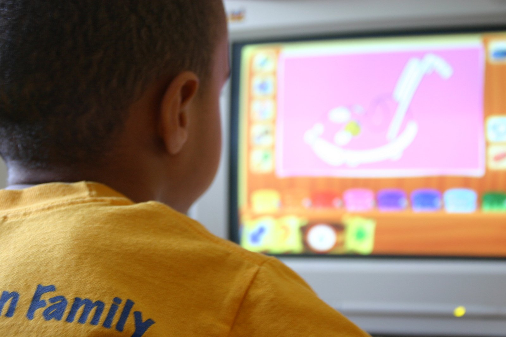

C# Game Development
One of my first experiences completing an assigned project was designing and creating a program capable of aiding in the education of my peers in AS level chemistry. The project consisted of a single program coded in the C# language. The
program acted as a quiz like game containing randomised chemistry questions, a leaderboard, user creation, options menu and other additional features.
The main areas of personal development I feel this project contributed include:
- Learning the basic syntax of the C# language.
- Experience in the design process of a project.
- Experience in the testing of a finished project.
- Experience utilising basic coding structures.

Database Project
Part of obtaining my A level in Software Systems Development involved creating a project that utilised a mySQL database. The projects aim was to aid a business in areas such as stock management, employee scheduling and some additional
features. Data for the business was stored within a mySQL database which required PHP code to modify and access the data within the database. The actual user interface was coded using the C# language.
The main areas of personal development I feel this project contributed include:
- Learning the basic syntax of the PHP language.
- Furthering my knowledge of the C# language.
- Experience using databases, specifically mySQL.
- Working under stressful time constraints.
Reversi Game Development
During my first semester at university I was tasked with creating a project that allowed users to play the board game 'Reversi'. The project was coded in the coding language Java and was my first experience coding in Java. This was by far the
most challenging project I have been involved in and challenged my knowledge of the Java coding language and object-oriented programming ability.
The main areas of personal development I feel this project contributed include:
- Learning the basic syntax of the Java language.
- Greatly furthering my experience in object-oriented programming.
- Working within a team to design a project.
- Furtheing my time management skills.
Website Development
Another project I enjoyed working on was the creation of a personal website, this project required knowledge of HTML and CSS. Overall the project was an enjoyable experience as it allowed for creative freedom in the design of the website. I
feel this project also expanded heavily upon my knowledge by allowing me to use non-programming languages such as CSS a style sheet language and HTML a markup language.
The main areas of personal development I feel this project contributed include:
- Learning the basic syntax of the HTML markup language.
- Learning the basic syntax of the CSS style sheet language.
- Experience in website design.
- Experience in utilising github.